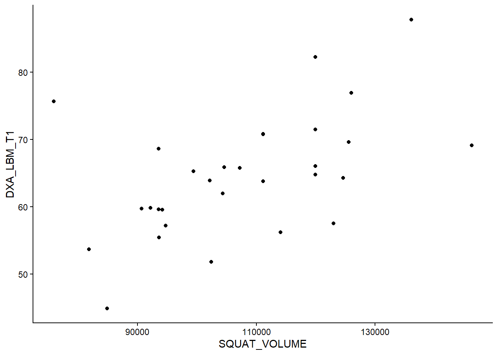
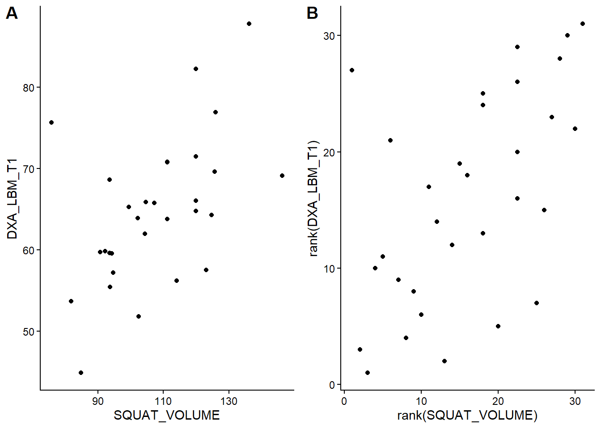

We have been introduced to the regression model. In the simple case, a regression model can be used to measure the association between two numerical variables. In this chapter, we will discuss a simplification of this measurement, the correlation coefficient. A correlation is a unitless measure of the relationship between two variables. The strength of the relationship is expressed between -1 and 1, where values closer to 0 indicate a weaker relationship. The difference between measuring the association between two continuous variable in a regression model and with a correlation coefficient is that the regression model can be used when we want to measure the change in \(Y\) (the dependent variable) as a function of \(X\), the independent variable. This is particularly useful when we, for example, are studying a system where \(X\) is fixed, as in an experiment (Sokal and Rohlf 2012, 552–52). The correlation coefficient does not care about fixed variables; it returns a measure of association between two variables (interdependence (Sokal and Rohlf 2012)) regardless of how the variables are entered into the calculation.
Sokal, Robert R., and F. James Rohlf. 2012. Biometry : The Principles and Practice of Statistics in Biological Research. [Extensively rev.] 4th. New York: W.H. Freeman.
Mathematically, the correlation coefficient is the covariance between two variables scaled by their standard deviations. The covariance of two variables is the degree to which a deviation from the mean in one variable corresponds to the deviation from the mean in the other variable. In the formula for the covariance (below), we see that the products of the deviations are summed over all observed pairs and then divided by the number of pairs to give us the average product of deviations from the means.
When we have the covariance, we have a number that, when positive, indicates a positive association; when \(x_i\) is high, so is \(y_i\). If the covariance is negative, it indicates a negative association; for higher-than-average values of \(x_i\), \(y_i\) will tend to be lower than average. The covariance is “normalized” by dividing by the product of the standard deviations (\(s(x)s(y)\)), giving us the correlation coefficient (cor, or \(r\)), which is bounded between -1 and 1. This all works out because dividing by the products of the standard deviations puts both measures on the same scale.
This type of correlation is known as the Product-Moment Correlation Coefficient, also referred to as Pearson’s correlation coefficient or by its symbol \(r\), which represents a correlation calculated from a sample of data. An alternative to Pearson’s \(r\) is Spearman’s correlation coefficient, which can be calculated using the same formula, but after transforming the data to ranks. The Spearman alternative is practical when the data are not normally distributed. This can cause over- or underestimation of an association using the Pearson approach. Similarly, Kendal’s correlation coefficient is robust to non-normal data patterns as it is calculated based on ranks. All three alternatives are available in R and JASP for measuring the association between two numerical variables.
Calculating the correlation coefficient by hand, in R
## Copy and run the code in your own session# Set seed makes random number generation # reproducibleset.seed(2)# Generate n number of observationsn <-10# Create two correlated variablesy1 <-rnorm(n)y2 <-0.6*y1 +rnorm(n,0, 0.2)# A simple plotplot(y1, y2)# Calculate the product of deviationspd1 <- y1 -mean(y1)pd2 <- y2 -mean(y2)# The sum of the products of deviationsspd <-sum(pd1 * pd2)# Calculate the covariancecov_yy <- spd / (n-1)# Compare to the built in functioncov(y1, y2)# Normalizing the covariance to get correlation r <- (spd / (n-1)) / (sd(y1) *sd(y2))# Check result using built in function for correlationcor(y1, y2)
7.1 An example using real data
Using the data set provided by analyzed in (Haun et al. 2019, 2018) (the hypertrophy dataset, see Table 1 or exscidata::hypertrophy), we will see how the correlation works. First, we will load the data into JASP or R and select the variables SQUAT_VOLUME and DXA_LBM_T1 for further analysis. A reasonable interpretation of these variables is that SQUAT_VOLUME represents the pre-intervention training volume, and DXA_LBM_T1 represents the percentage of lean body mass before the intervention. In R, we can select the variables as:
Haun, C. T., C G. Vann, C. Brooks Mobley, Shelby C. Osburn, Petey W. Mumford, Paul A. Roberson, Matthew A. Romero, et al. 2019. “Pre-Training Skeletal Muscle Fiber Size and Predominant Fiber Type Best Predict Hypertrophic Responses to 6 Weeks of Resistance Training in Previously Trained Young Men.” Journal Article. Frontiers in Physiology 10 (297). https://doi.org/10.3389/fphys.2019.00297.
Haun, C. T., C. G. Vann, C. B. Mobley, P. A. Roberson, S. C. Osburn, H. M. Holmes, P. M. Mumford, et al. 2018. “Effects of Graded Whey Supplementation During Extreme-Volume Resistance Training.” Journal Article. Front Nutr 5: 84. https://doi.org/10.3389/fnut.2018.00084.
A basic question given this data is whether participants with more previous training volume have more muscle mass (lean mass). We can assess this by performing a correlation analysis. The cor function in R gives the correlation coefficient from two variables. Notice that we need to specify use = "complete.obs" to remove observations without both variables recorded.
cor(dat$SQUAT_VOLUME, dat$DXA_LBM_T1, use ="complete.obs")
[1] 0.5210417
In JASP, we can select “Correlation” under the “Regression” analysis module and choose the variables to be included in our correlation analysis.
The estimated value is quite high, around 0.5. Remember that a perfect correlation is either 1 or -1, and 0 indicates no correlation between variables. The correlation coefficient is not sensitive to the order of variables:
cor(dat$DXA_LBM_T1, dat$SQUAT_VOLUME, use ="complete.obs")
[1] 0.5210417
We can use the correlation coefficients to draw inferences. A test against the null hypothesis of no correlation, \(H_0: r=0\), can be done in R using the cor.test function.
cor.test(dat$DXA_LBM_T1, dat$SQUAT_VOLUME, use ="complete.obs")
Pearson's product-moment correlation
data: dat$DXA_LBM_T1 and dat$SQUAT_VOLUME
t = 3.2302, df = 28, p-value = 0.003154
alternative hypothesis: true correlation is not equal to 0
95 percent confidence interval:
0.1979263 0.7420220
sample estimates:
cor
0.5210417
From this function, we get a t-value, the degrees of freedom, a p-value, and a confidence interval. The p-value is relatively small and the 95% confidence interval does not contain the null-hypothesis. Based on our sample, it is reasonable to believe that lean body mass and training volume are also correlated in the population from which our sample was drawn.
The same information is available in JASP by adding components to the results table (confidence intervals) and inspecting the p-values.
7.2 Always plot the data!
When doing a correlation analysis, you are at risk of drawing conclusions based on wonky data. A single data point, for example, can inflate a correlation in a small data set. Let’s look at the data we are using now (Figure 7.1).
Code
dat %>%ggplot(aes(SQUAT_VOLUME, DXA_LBM_T1)) +geom_point() +theme_classic()

Figure 7.1: A figure showing the relationship between training volume and lean mass
The figure displays no apparent curve-linear relationship, there are no obvious outliers, and both variables are evenly distributed (approximately normally distributed). These are assumptions concerning the correlation analysis. Since they are reasonably met, our test above still holds.
7.3 Comparing the correlation analysis to a regression model
All good! We have a test that measures the strength of the relationship between two variables. We can now compare the information obtained from the correlation to that obtained from a regression model. See R code below. If you are working in JASP, add a regression model to you results with DXA_LBM_T1 as the dependent variable and SQUAT_VOLUME as the independent variable. Here it might be a good idea to rescale the SQUAT_VOLUME variable to tons instead of kg. To do this in JASP, we can insert a new computed variable and divide squat volume by 1000.
# Rescaling the squat volumedat <- dat |>mutate(SQUAT_VOLUME = SQUAT_VOLUME /1000)# Store the correlation analysis in an object c <-cor.test(dat$DXA_LBM_T1, dat$SQUAT_VOLUME)# store the regression modelm <-lm(DXA_LBM_T1 ~ SQUAT_VOLUME, data = dat)# Display the p-value for the regression coefficientcoef(summary(m))[2, 4]
[1] 0.003154061
# Display the p-value for the correlation coefficientc$p.value
[1] 0.003154061
In the analysis above, notice that the p-value for the regression coefficient for squat volume is (almost) precisely the same as the p-value for the correlation analysis! Also, note that the \(R^2\) value in the regression model is equivalent to the squared correlation coefficient. Remember that the \(R^2\) in the regression model is the degree to which the model accounts for the data (Navarro 2020), also see here.
Navarro, D. 2020. Learning Statistics with r.
summary(m)$r.squared
[1] 0.2714845
c$estimate^2
cor
0.2714845
These similarities arise from the fact that they are the same analysis, the degree to which the two variables covary.
The additional benefit of using a regression analysis comes from the interpretation of the regression coefficient estimates. In our example, we can see that increasing the weekly volume by one ton increases percentage lean mass by 0.283% percentage points. The confidence interval is given on the same scale and can be retrieved by using the code below:
confint(m)
This shows that the true value could be as low as 0.1 and as high as 0.46. Something that again indicates that the two variables vary together.
7.4 Correlation comes in many forms
As noted above and apparent from the help pages for cor (?cor in R), you will see that you may specify the type of correlation used for analysis. Commonly used are Pearson’s (default) and Spearman’s correlation coefficient. The difference between these two is that Spearman’s correlation coefficient does not assume normally distributed data. This is basically a correlation of ranks. The highest number in a series will have the highest rank, and the smallest will be given the lowest rank (i.e., 1).
We can prove this! The rank function gives a ranking to each number. We first panel of our figure (Figure 7.2) the data as raw continuous values and the second transformed to ranks.
Code
library(cowplot)raw <- dat %>%ggplot(aes(SQUAT_VOLUME, DXA_LBM_T1)) +geom_point() +theme_classic()rank <- dat %>%ggplot(aes(rank(SQUAT_VOLUME),rank(DXA_LBM_T1))) +geom_point() +theme_classic()plot_grid(raw, rank, labels =c("A", "B"))

Figure 7.2: Two figure showing the relationship between training volume and lean mass either in raw units (A) or transformed to ranks (B)
We can see in the figure that the relationship persists after rank transformation. To use the Spearman’s correlation coefficient we specify "spearman" in the cor.test function. Selecting different correlation coefficients in JASP is as easy as clicking the right option in the correlation panel.
Spearman's rank correlation rho
data: dat$SQUAT_VOLUME and dat$DXA_LBM_T1
S = 2167.4, p-value = 0.00338
alternative hypothesis: true rho is not equal to 0
sample estimates:
rho
0.5178259
To see that this is similar to using Pearson’s correlation coefficient with ranked data.
The p-values are identical. Success! Another statistical mystery unlocked!
In this case, the interpretation of tests using ranked data and untransformed data is very similar. When do we use the rank-based correlation? In instances where assumptions for the Pearson correlation are not met, a rank-based correlation will protect us from making bad decisions. When, for example, a single data point “drives” a correlation, the rank-based correlation (Spearman’s) is less likely to suggest a strong relationship in the population from which we drew our sample.
7.5 Statistical and subject-matter interpretations
It is now very important to stop and think about the estimates that we arrived at above. We have concluded that lean body mass correlates quite well with squat volume calculated as the amount of weight lifted per week. Does this mean that individuals who exercise with higher volumes have more muscle? Perhaps, but could it also mean that individuals who are taller and heavier work out with greater resistance? Perhaps. In any case, the correlation (and regression) analysis of snapshot observational data can lead us to believe that the mathematical relationship also indicates a causal relationship. We must tread carefully when interpreting associations (Spiegelhalter 2019, chaps. 2, 4, and 5); this is where your subject-matter knowledge is particularly useful.
Spiegelhalter, D. J. 2019. The Art of Statistics : How to Learn from Data. Book. First US edition. New York: Basic Books.